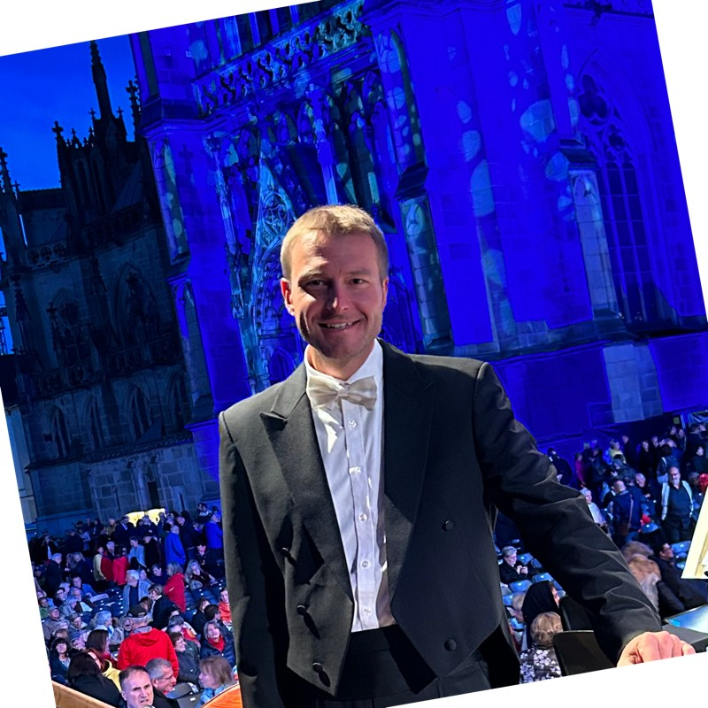

Künstlerische Leitung
Marc Bender
Geiger und Dirigent. Er leitet das Kammerorchester Wissembourg seit 2010 und trägt das deutsch-französische Projekt des Ensembles.

Porträt
Die Geige als Brücke
Marc Bender studierte Violine am Conservatoire de Strasbourg, in den Klassen von Odile Meyer-Siat und Haïk Davtian.
Anschließend vervollkommnete er seine Ausbildung an der Musikhochschule Stuttgart bei Kolja Lessing und am Royal College of Music in London bei Levon Chilingirian.
Er spielte im English Chamber Orchestra, im Heilbronner Kammerorchester, im Tübinger Kammerorchester und im Orchestre Philharmonique de Strasbourg und konzertierte in ganz Europa und in Asien. Heute ist er Geiger bei der Philharmonie Baden-Baden.
Seit 2010 hat er die musikalische Leitung des Kammerorchesters Wissembourg inne und hat dessen Entwicklung zum deutsch-französischen Ensemble an der Seite der Musikschule Landau begleitet.
Werdegang
Ausbildung und Laufbahn
- Ausbildung
Conservatoire de Strasbourg
Violine, in den Klassen von Odile Meyer-Siat und Haïk Davtian.
- Weiterbildung
Musikhochschule Stuttgart
Bei Kolja Lessing.
- Weiterbildung
Royal College of Music, London
Bei Levon Chilingirian.
- Orchesterlaufbahn
English Chamber Orchestra, Heilbronn, Tübingen, Straßburg
Geiger im Heilbronner Kammerorchester, im Tübinger Kammerorchester und im Orchestre Philharmonique de Strasbourg. Konzerte in ganz Europa und in Asien.
- Seit 2010
Leitung des Kammerorchesters Wissembourg
Musikalische Leitung des Ensembles und Ausbau des deutsch-französischen Projekts mit der Musikschule Landau.
- Heute
Philharmonie Baden-Baden
Geiger im Orchester.
Musik, eine universelle Sprache, über Grenzen hinweg.
Mit dem Orchester arbeiten
Konzertprojekt, Einladung einer Solistin oder eines Solisten, Partnerschaft mit einer Musikschule oder Institution: Die künstlerische Leitung antwortet direkt auf Anfragen.